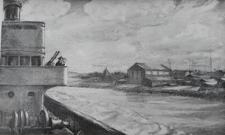
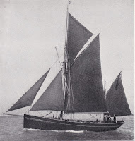
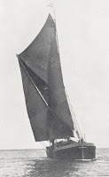
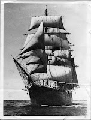
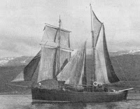
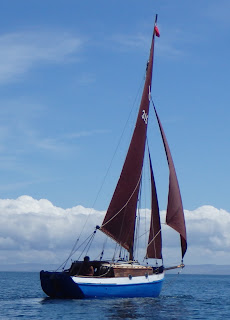
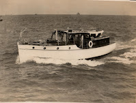
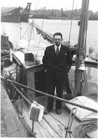
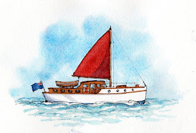

 |
| His Own Little Ship FB Harnack for Yachting Monthly |
{kind=link}
The new frontispiece comes courtesy of Yachting Monthly magazine (thank you YM editor, Theo Stocker). It’s a drawing by FB ‘Fid’ Harnack (b1897) who served in both the first and second world wars. The figure of the officer gazing through binoculars at the yard where his yacht has been laid up, while his ship – is it a destroyer? – steams inexorably past (look at its wake), seemed to me to be a perfect expression of the likely feelings of the RNVSR ‘yachtsman volunteers’ as their private passion became wartime duty.
 |
| Our Boy |
{kind=link}
with Parsons at the wheel, bound to the westward and to Brixham, where they were both born. It was a moment of heartbreaking longing as I watched her, and then ‘Echo bearing green four five, one thousand yards closing’ for we were
doing anti-submarine exercises. The whole complex mechanism of the destroyer
clicked smoothly into place. I had my small part to play in that organisation
which left no room for thinking of my beloved ship and the seas we had sailed.
A curtain came down in my mind which was not to be lifted for six long years.
 |
| June of Rochester |
{kind=link}
Arthur and Dorothy Bennet revisited the barge yacht June of Rochester, their much-loved pre-war home, to find her damp and rotting. They were parents now. ‘We’d better look for a house’, they agreed.
 |
| Cap Pilar |
{kind=link}
 |
| Mary Fortune |
{kind=link}
Nigel Sharp,
in Troubled Waters, quotes wonderfully laconic logbook entries by his
father Philip who had just purchased a highly desirable Tumlare class yacht, JTQ,
in August 1939.
7 September 1939 – JTQ towed over to Little Falmouth yard to lay up.
1 April 1946 – JTQ relaunched
My father was deeply grateful for the care that Waldringfield boatman Jimmy Quantrill had taken of his already ancient former pilot boat, Hustler during the six years he'd been away and determined never to leave the River Deben again if he could possibly avoid it. Arthur Ransome, unwell, was dismayed by the work needed to tackle the rot on Selina King – and had to accept that she had now become too big for him. So he commissioned Peter Duck. Robin Balfour found re-commissioning his steel-hulled, twin-keeled Bluebird of Thorne, almost the only bright spot in an extraordinarily difficult 1946. (He was amused to discover that Bluebird had twice been rejected by Navy requisitioning officers because of her 'bizarre' design. Denys Rayner, one of the most dedicated and high achieving of the RNVR officers could not face a return to sailing and sold his delightful Robinetta (built to his own design) to a Wren colleague. (Later, when he returned to sailing, he founded the well-known Westerly yachts.)
 |
| Robinetta still sailing today |
{kind=link}
I had often wondered what happened to Naromis, the smart little 38’ motor yacht belonging to the banker Robin Clutton, who had taken my father and companions to the Baltic in 1939. It was a contribution to their RNVSR / London Flotilla training and it was also a holiday with a purpose. They photographed German war vessels and potentially strategic installations. They had also successfully collected Iris, Clutton’s 17-year-old daughter, who had been working as an au pair for a Nazi family in Berlin. Her fluency in German enabled her to join the WRNS as an Interceptor, stationed at Cromer on the Norfolk coast, monitoring high frequency signals to gain advance warning of E-boats attack.
 |
| Naromis on her sea trials Lowestoft 1938 |
.jpg){kind=link}
Naromis had been left in Grimsby on Saturday September 2nd 1939 as her crew hurried home to find their call-up papers. My father last saw her surrounded by trawlers and drifters which were busily being converted for use as minesweepers, anti-submarine and patrol vessels. Her owner, Robin Clutton, a WW1 veteran, was prevented by his age and artificial leg, from volunteering directly, so left Naromis for the Navy to use in his stead.
 |
| Robin Clutton and Naromis Grimsby 1.9.1939 |
I found myself oddly anxious to know whether Naromis had survived. I spent hours combing through ship lists and post war yacht registers. I was not the only person looking for her. Her pre-war designer, Higley Halliday was well-known and she was of interest to other enthusiasts for his boats. One of them believed she had gone to the Mediterranean and her name had been changed to MY Bayeed. I included that information in my edition of my father's book, The Cruise of Naromis. I was wrong.
One day, just weeks before the paperback edition was due to go to the printer, I had an unexpected email. It was from Robin Clutton's grandson, Trevor Sear. He had come across The Cruise of Naromis and could tell me the rest of her story.
Robin Clutton had not had an easy war. Schroders, the company for whom he worked, was German owned and had struggled to remain in business, cutting all staff salaries by half. Clutton and his wife had six children, all except the oldest two daughters, still in education. There were periods when they could no longer afford to live in their own house. The children were dispersed to school or other relatives, the parents rented a flat in London so Mrs Clutton could work full time. By the time the war was over and Naromis available to be returned, Clutton was tired and impoverished. Two of the children went with him to fetch her from Grimsby. Her white paint and bright varnish had been covered with thick layers of battleship grey. She was in poor repair and her engine failed. Clutton no longer had the energy or the money to cope, He sold her.
Because her name had been built from the names of his six children and his wife -- Nigel, Angela, Rafe (RObin and ROsalie), Marigold, Iris and Shirley it was a condition of sale that it should be changed. So effectively she vanished. Until Trevor made the connection and sent the email.
Why did this matter? It shouldn't really. Naromis was only a little motor yacht who, like the human members of her generation found her life changed from pleasure to war time duty. (It must have been tough out there in the grey North Sea, searching for airmen, for whom she was possibly the only hope. I wonder how often, if ever, she was successful?)
Naromis mattered to me because of the experience she provided to my 21 year old father in August 1939 -- and the extended journey of research and discovery which has followed. She mattered to her own family, I imagine, because of the joy and pride she gave before their existences changed. Perhaps she also had a charm of her own?
 |
| Claudia Myatt's painting of Naromis setting out for the Baltic in August1939 |
{kind=link}
I had a half a page left of the final allocation for the paperback. I bunged this new information in with glee. The story felt complete.
{kind=link}